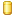
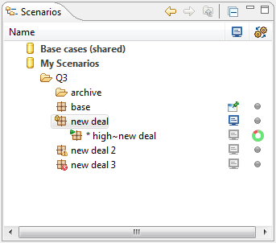
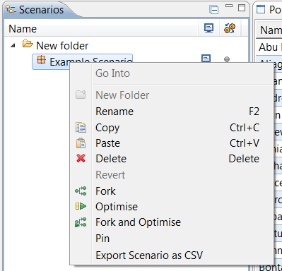

The Scenarios Navigator is common to all perspectives and drives most use of the application. Here, the user manages the scenarios in the workspace and selects them for viewing, editing and optimising.
The scenarios are organised into a tree of repositories  , folders and scenarios . A folder is just like a directory on the filesystem, containing other folders and scenarios. Folders are stored on the local machine and optionally on a network share. The repositories, “My Scenarios” and “Base cases (shared)”, are hidden if the share is not enabled.
The Pin and Display icons control how scenarios appear in comparative reports. Pinning a scenario selects it as the base case to compare other scenarios against in comparative reports. Only one scenario may be pinned at one time. The pinned scenario is always featured in a comparative report. The Display icon determines whether a scenario is shown in a comparative report: if it is selected , the scenario will be displayed, while if it is unselected then the scenario will not appear on comparative reports. Clicking on a Display icon will toggle it between selected and unselected. Double-clicking on a Display icon will pin the scenario.
|  |
The column in the Scenarios View shows when work (evaluation or optimisation) is being done by the application on a scenario, so that the scenario is not available for editing. A scenario may also be overlaid with icons showing it has validation warnings and errors , is locked for editing or is being optimised .
Scenarios and folders can be moved around by drag and drop (hold down control to copy rather than move). The usual copy (CTRL+C) and paste (CTRL+V) actions can be used both within the Navigator and to transfer scenarios to and from the Windows filesystem or Desktop (where they have the “.lingo” file extension).
Double-clicking on a scenario will open it in the scenario editor. Single click on a scenario to snap the editor and display to that scenario (if open).
Scenarios can be “forked”. Forking simply creates a copy of the scenario, displayed under the contained under the parent scenario. Note: a scenario can only be placed under another scenario as a result of a fork.
|  |
Tip: Use forking to make chain of scenarios to track an evolving analysis case.
Right-clicking on a scenario or folder will open the context menu:
| Go Into | Change the focus of the scenarios view to the selected folder. This can be adjusted by clicking the back , forward or up icons. |
| New Folder | If a folder is selected, create a new folder inside it. |
| Rename | Rename a scenario or folder. |
| Copy | Copy a scenario or folder, to paste into Scenario Navigator or a Windows folder. |
| Paste | Paste a scenario from LiNGO or a Windows folder. |
| Delete | Delete a scenario. This action cannot be undone. |
| Revert | If you have made any unsaved changes to a scenario, abandon those changes and go back to the last saved version. |
| Fork | Make a new version of a scenario for quick editing and comparison. |
| Optimise | Attempt to automatically optimise the scenario, producing a commercially improved schedule by changing the allocation of trades and vessels, as well as some other factors. |
| Fork and Optimise | Fork a scenario and then optimise the fork. |
| Pin / Unpin | “Pin” or “unpin” the scenario. A pinned scenario is used as the base for comparison in comparative reports. |
| Export Scenario as CSV | Save the scenario in CSV format, allowing the scenario data to be edited in Excel or another spreadsheet. |